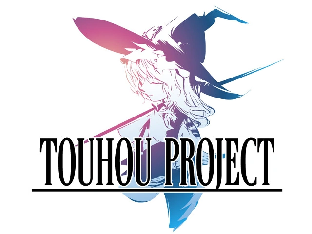

Pausar/Reproducir Música
Bullet Hell

Puntuación:
0
Vidas:
3
Tiempo entre stage:
03:00
Instrucciones
Usa el mouse para eliminar enemigos y esquiva los proyectiles.
Usa WASD para moverte
Usa C para esquivar e ir mas lento